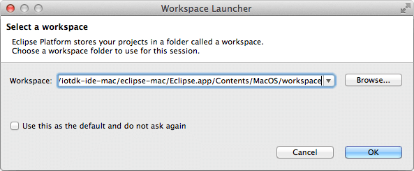
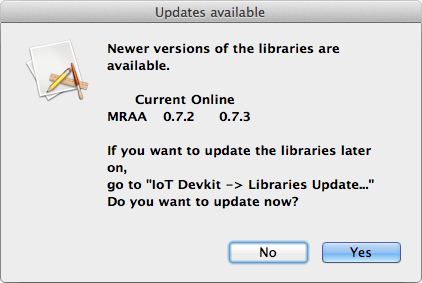
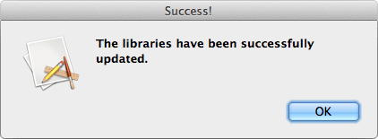
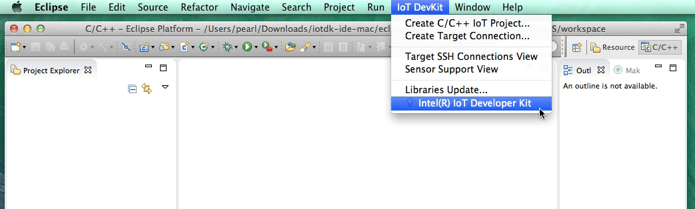
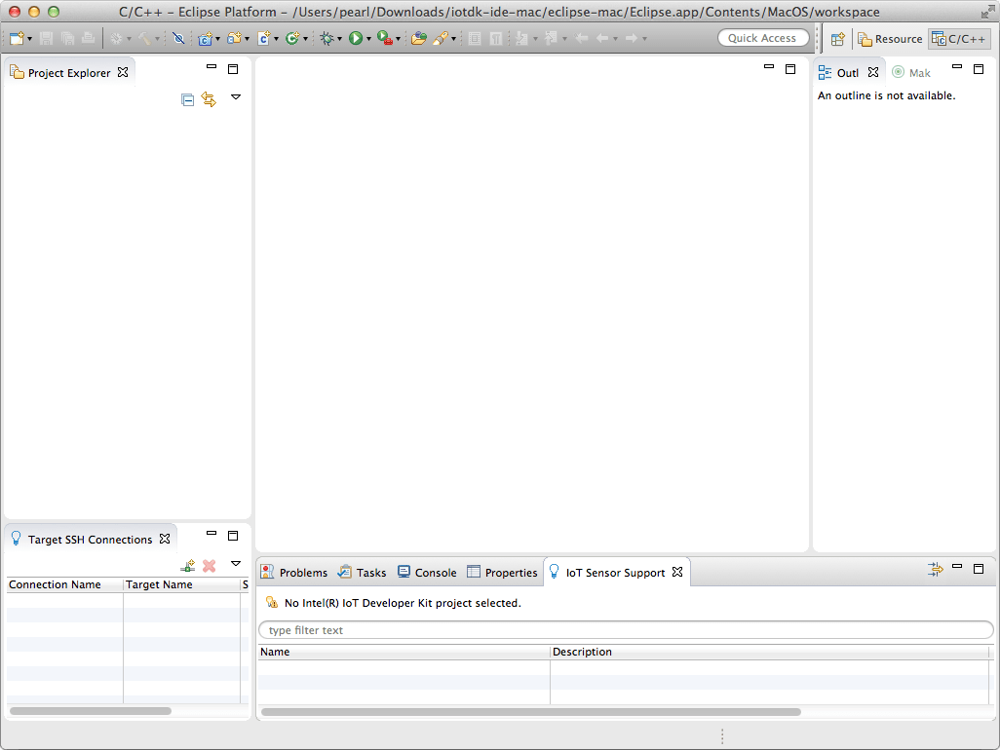

-
Once the archive file is extracted, go into the resulting iotdk-ide directory.
-
Double-click on devkit-launcher to launch the IoT dev kit Eclipse IDE.
On Windows, you may need to right-click on devkit-launcher.bat and select “Run as administrator”.

You should see a command line window appear (and quickly disappear, if you are on Windows) and the Eclipse IDE will launch.
-
After launching Eclipse, you will need to select a folder to become your Eclipse workspace for project files.

Click OK to keep the default workspace directory, or Browse… to select a different directory.
-
You may also see a popup indicating that updates are available.

Click Yes to update.

-
A welcome screen will be displayed. Click the X (close button) next to the panel’s tab title to dismiss this screen.

To see this welcome screen again, select IoT DevKit > Intel(R) IoT Developer Kit

You should now see a fresh Intel® IoT Developer Kit workspace.
